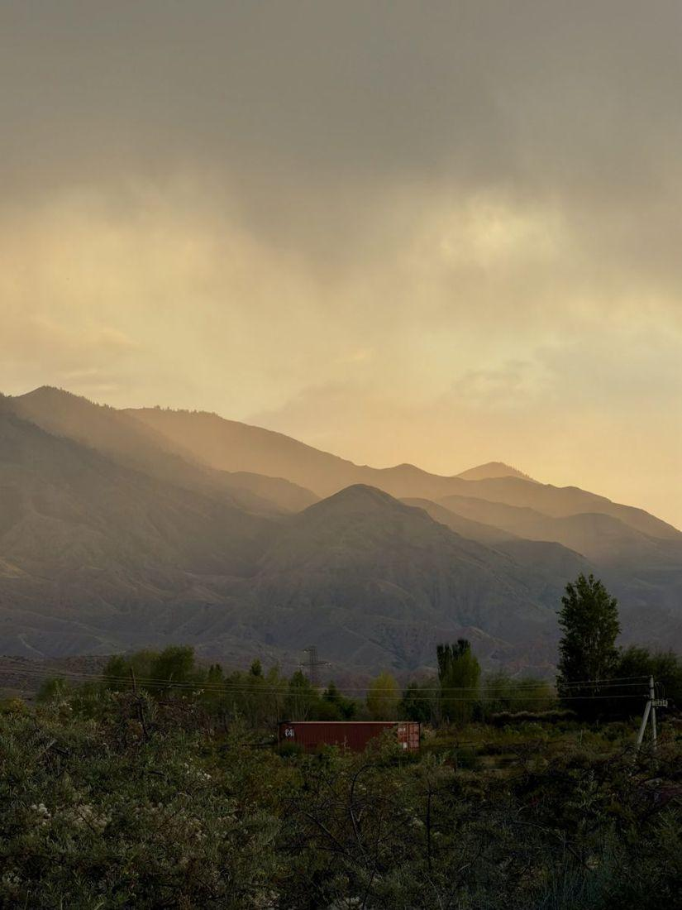
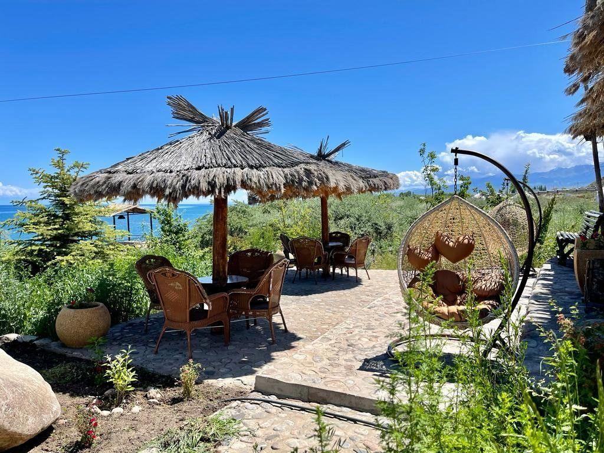
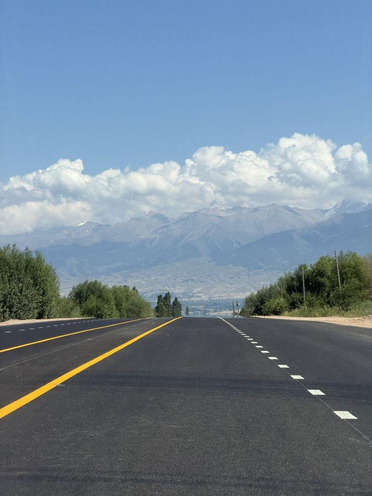
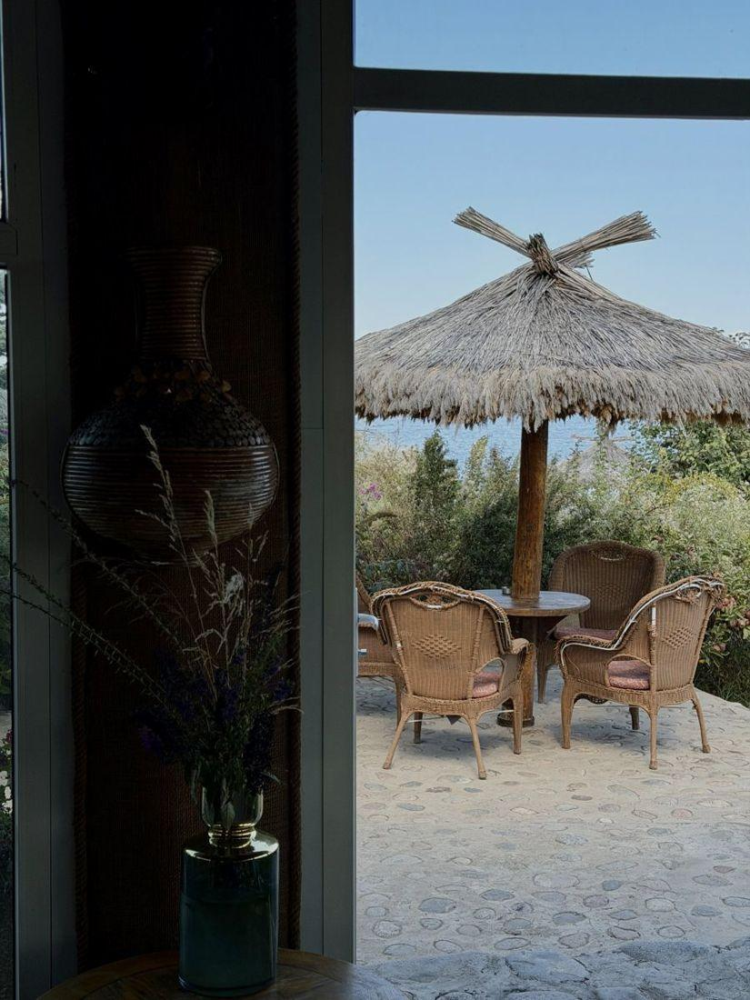
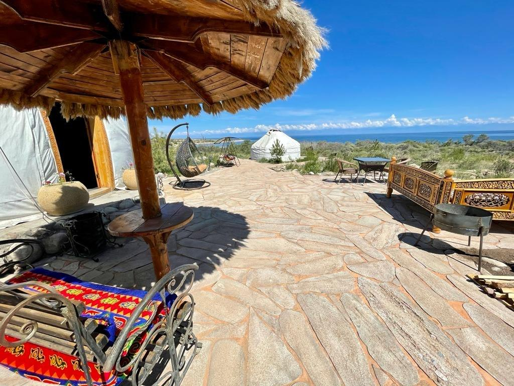
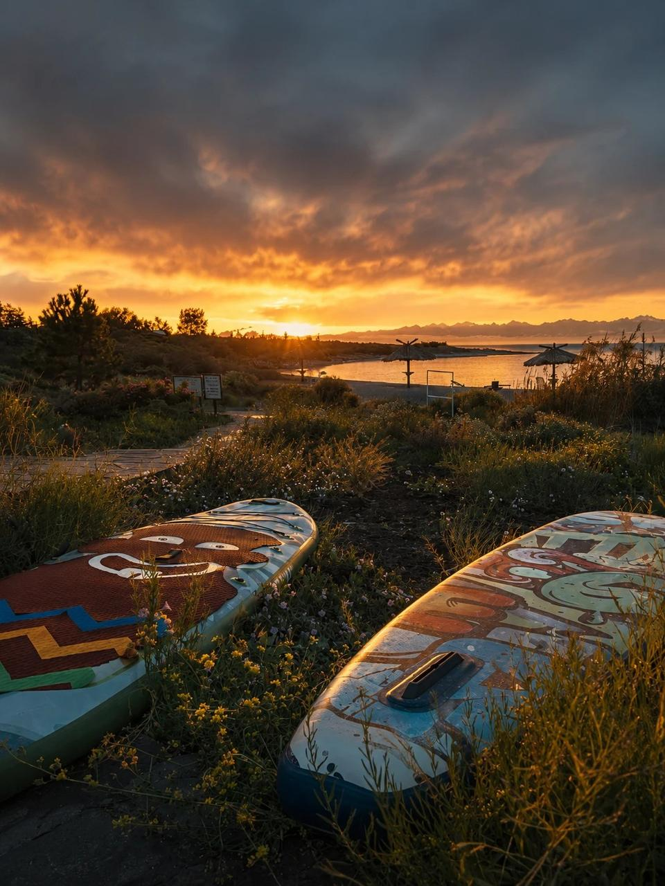
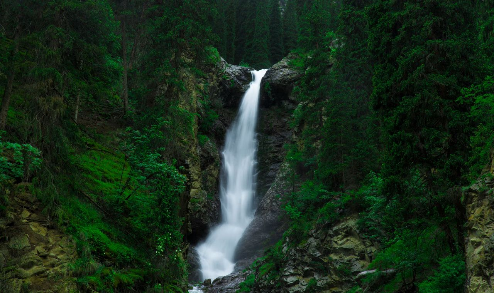
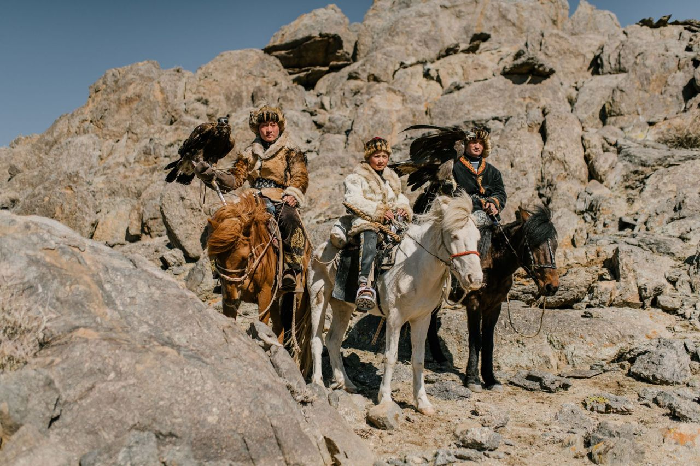
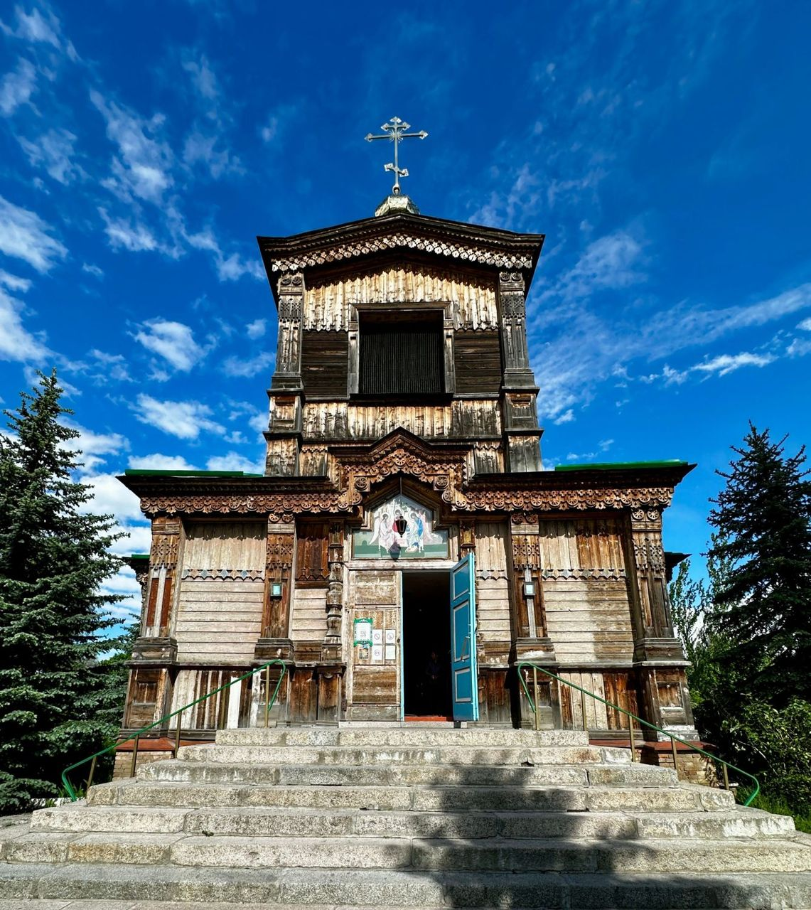

До встречи в Ak-Tengir
Tosor · South Shore of Issyk-Kul · Kyrgyzstan- WhatsApp+996 558 420 620
- Instagram@ak.tengir_yurtresort
- Сайтaktengir.com
Туроператорам, организаторам и группам — свяжитесь с нами напрямую, обсудим индивидуальные условия.
 WhatsApp
WhatsApp Сайт
СайтОтдыхайте в своём ритме
Можно провести день активно или просто остаться на территории с книгой, чаем и видом на горы.






Исследуйте южный берег Иссык-Куля
 Каньон Сказка10–15 мин
Каньон Сказка10–15 мин
Барскоон и водопады45–60 мин
Шоу беркутов45–55 мин Джети-Огуз≈ 1,5 часа
Джети-Огуз≈ 1,5 часа
Каракол и горнолыжная база≈ 2–2,5 часа
Время в пути примерное. Поможем найти такси или попутку, организуем трансфер для группы и подберём тур. Для больших групп составим индивидуальный маршрут.

AK-TENGIR
Yurt Resort · Retreat · Banya
South Shore of Issyk-Kul · Tosor